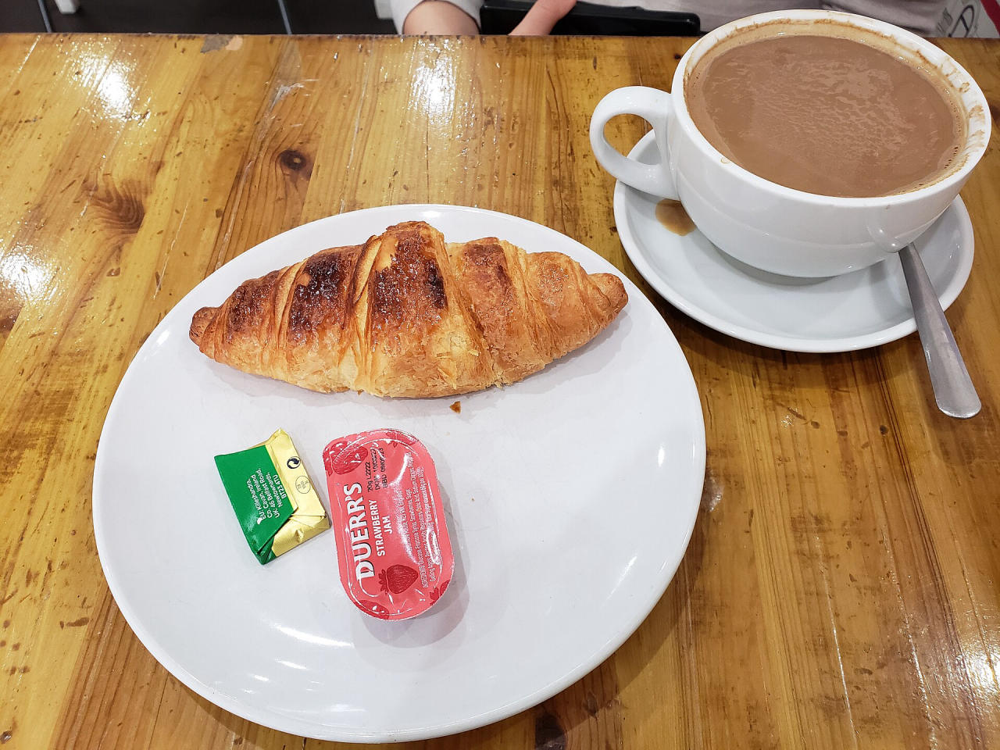
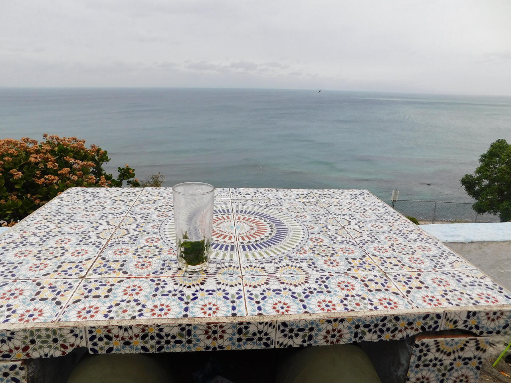
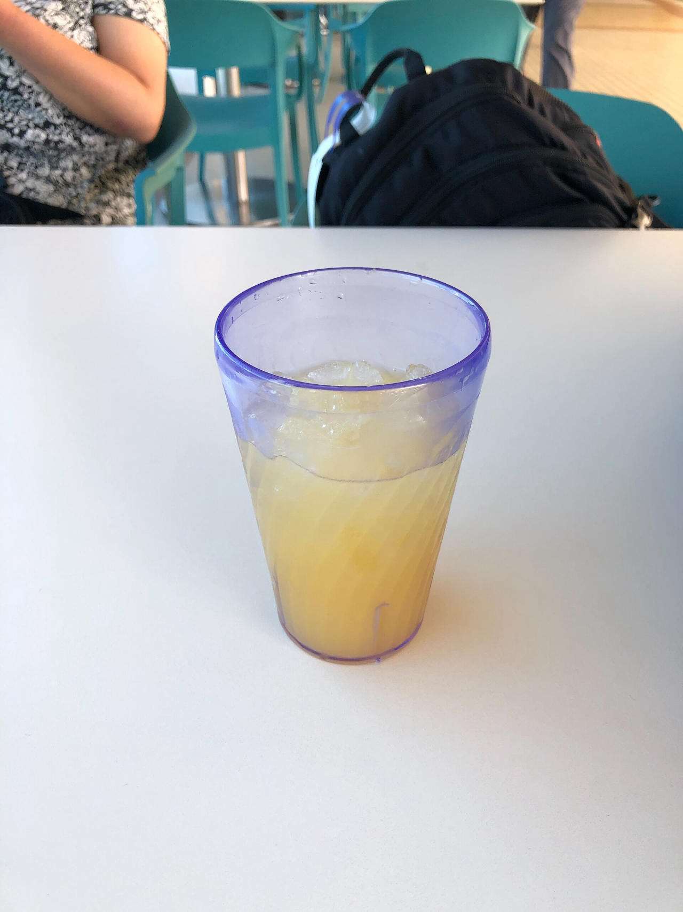
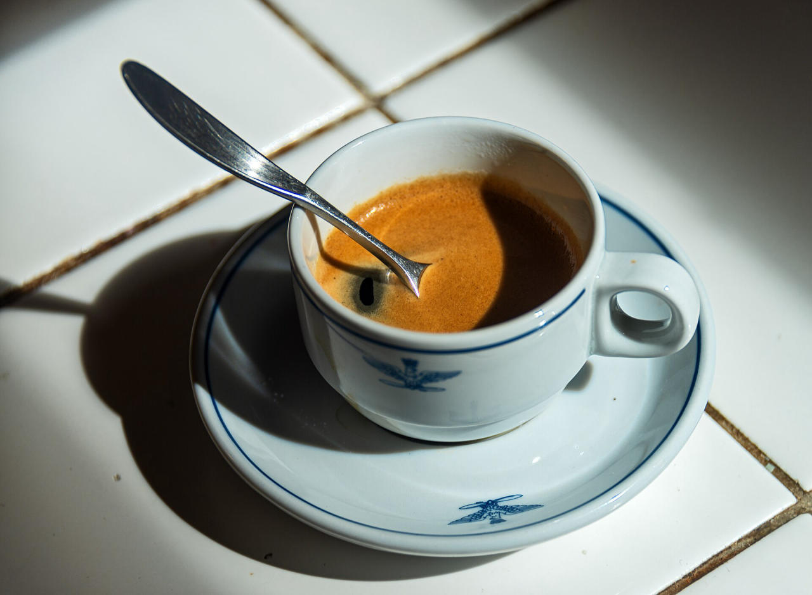
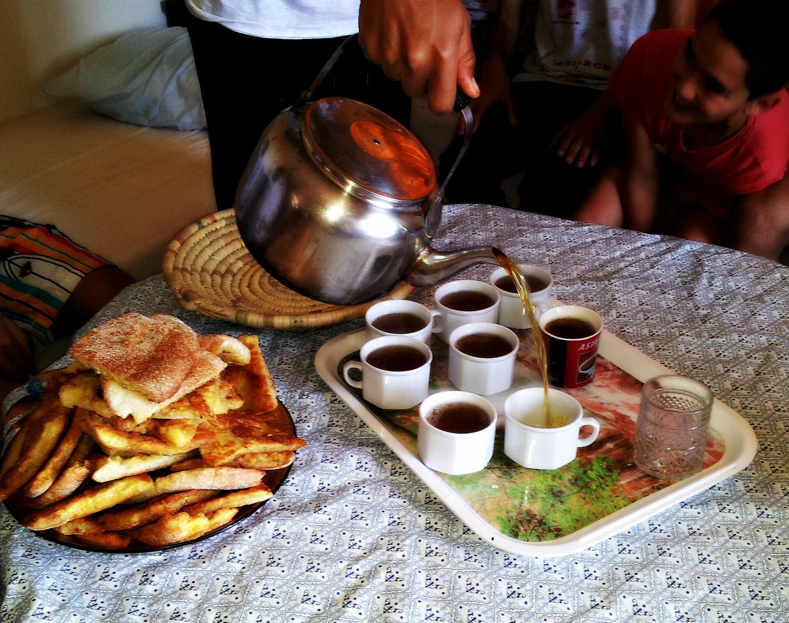

Crédits photos
Photos d'illustration issues de Wikimedia Commons, utilisées selon leurs licences. Elles ne représentent pas ce commerce fictif.
 Traditional Moroccan breakfast
Traditional Moroccan breakfast
par Ekaterina Kvelidze · CC BY-SA 4.0 · Source Mint Tea at Moroccan Soup Bar
Mint Tea at Moroccan Soup Bar
par Alpha · CC BY-SA 2.0 · Source


Café Hafa, Tangier
par Ideophagous · CC BY-SA 4.0 · Source Moroccan breakfast
Moroccan breakfast
par Wimmiden · CC BY-SA 4.0 · Source



Freshly brewed cup of espresso in sunlight on kitchen counter
par Daniel Case · CC BY-SA 4.0 · Source
Moroccan Breakfast
par Khammal92 · CC BY-SA 4.0 · Source